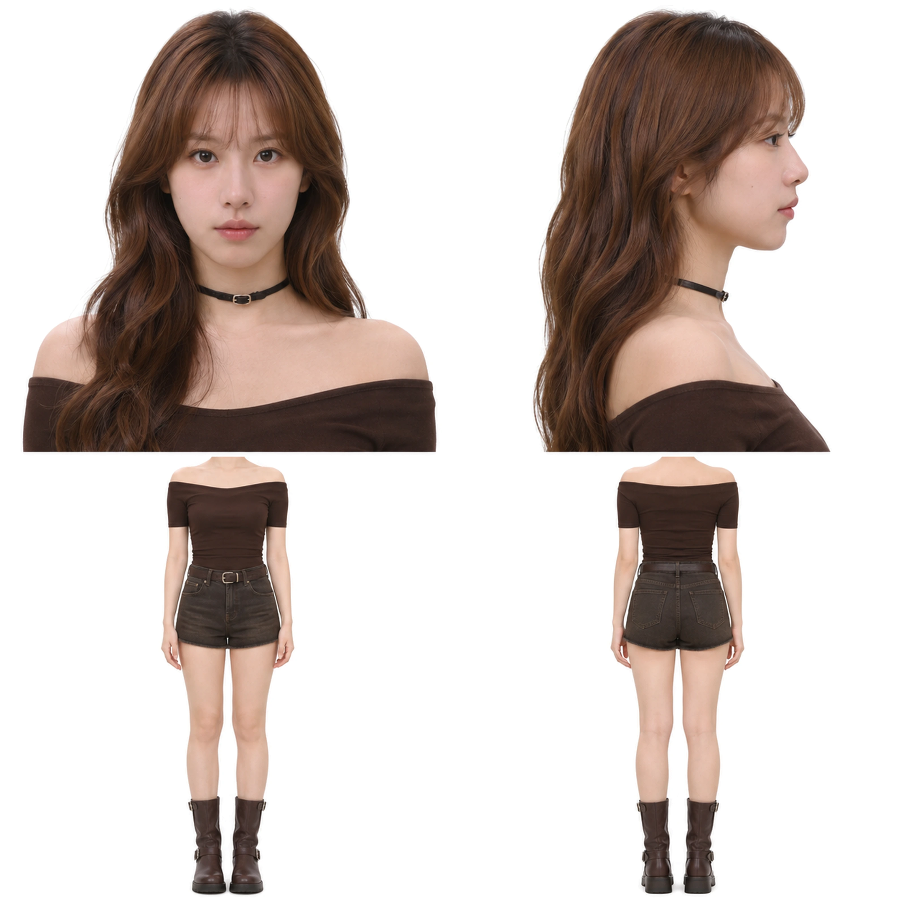
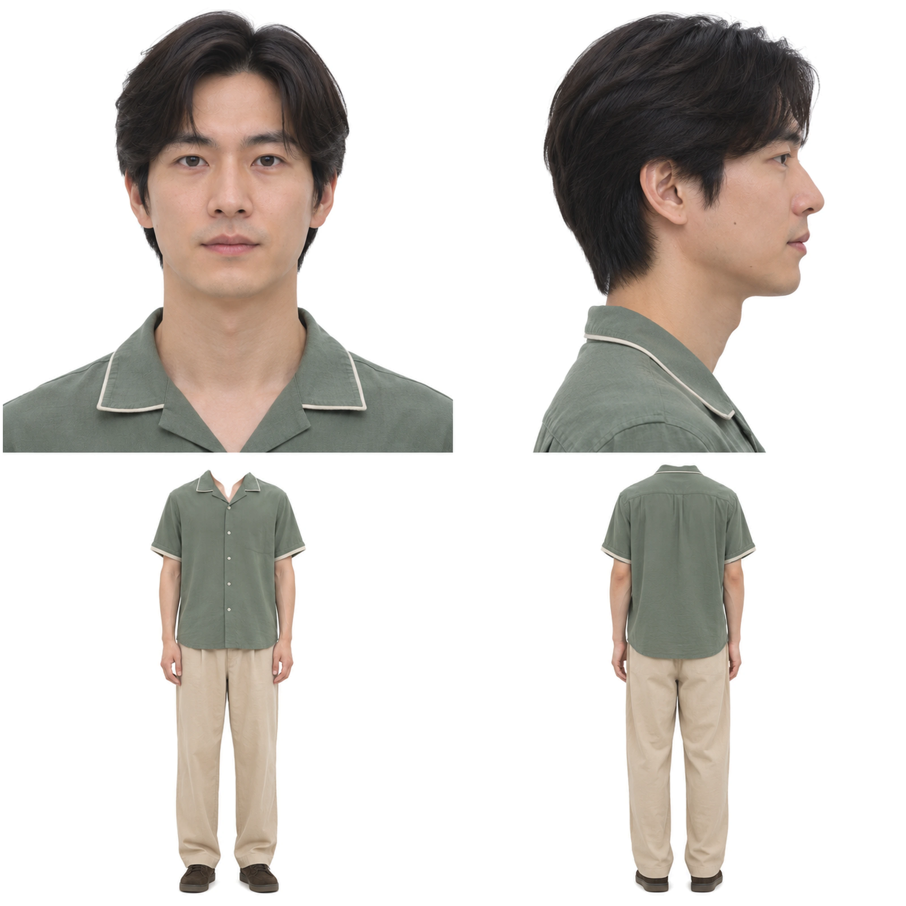
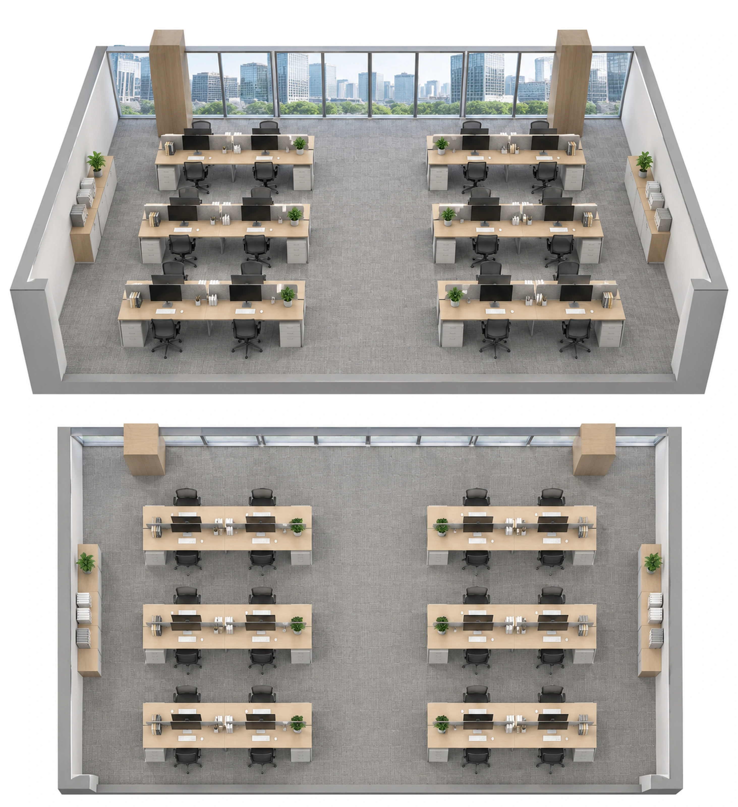
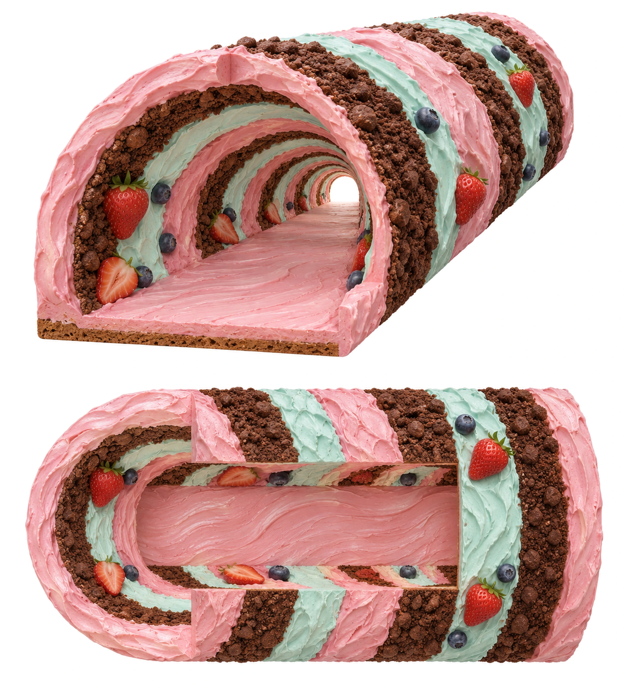
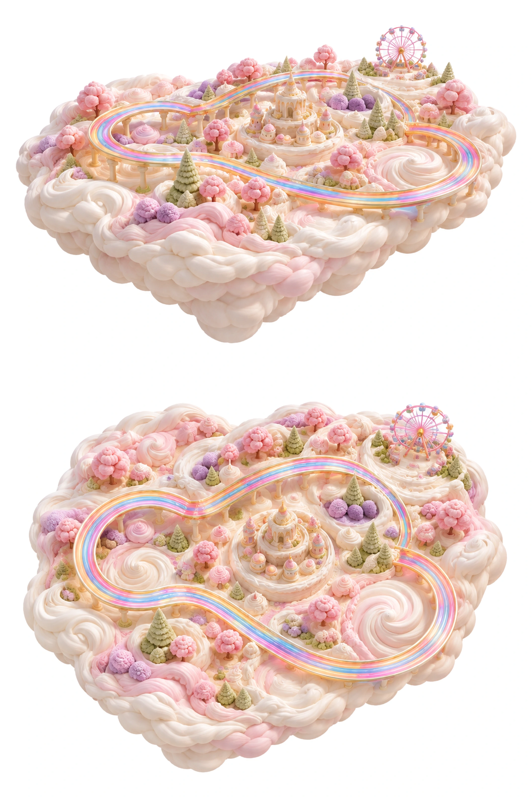
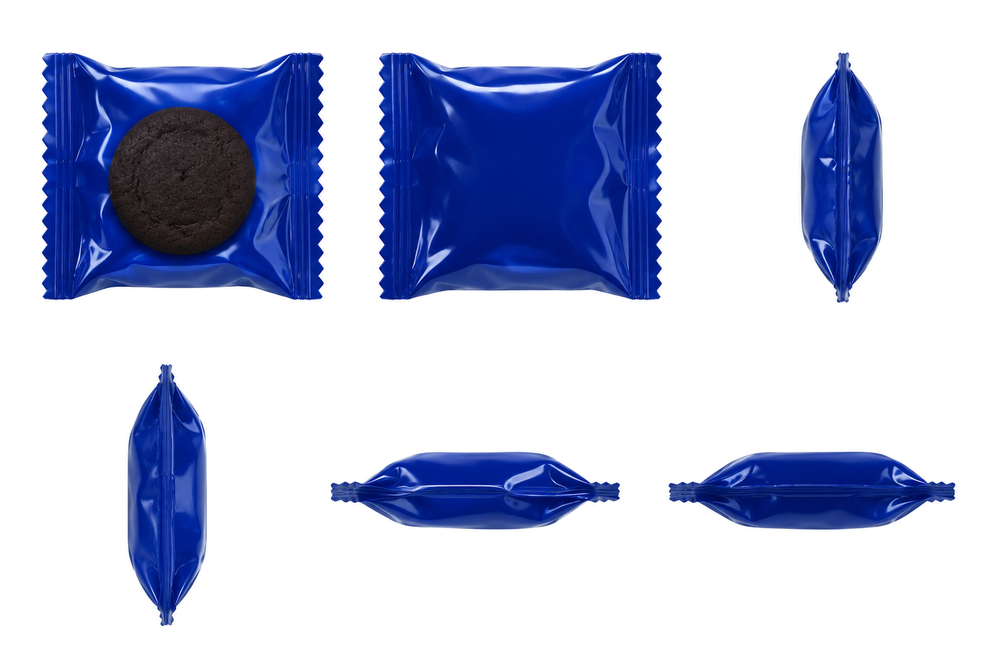
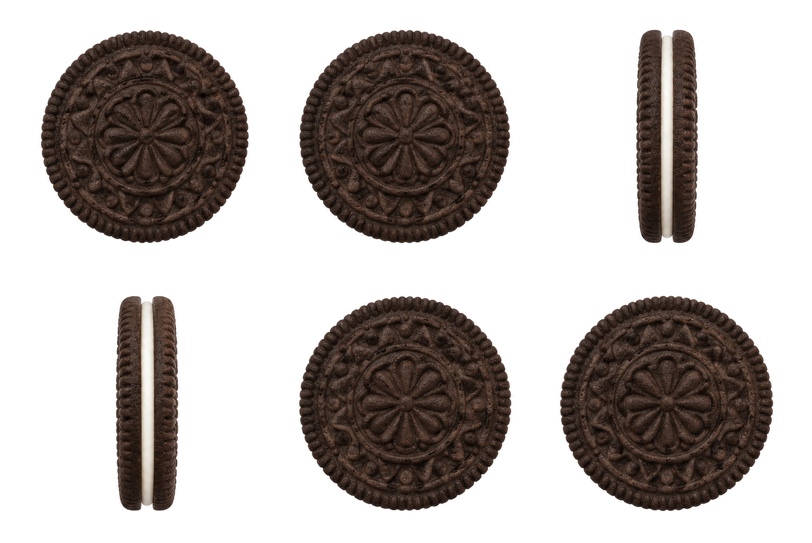
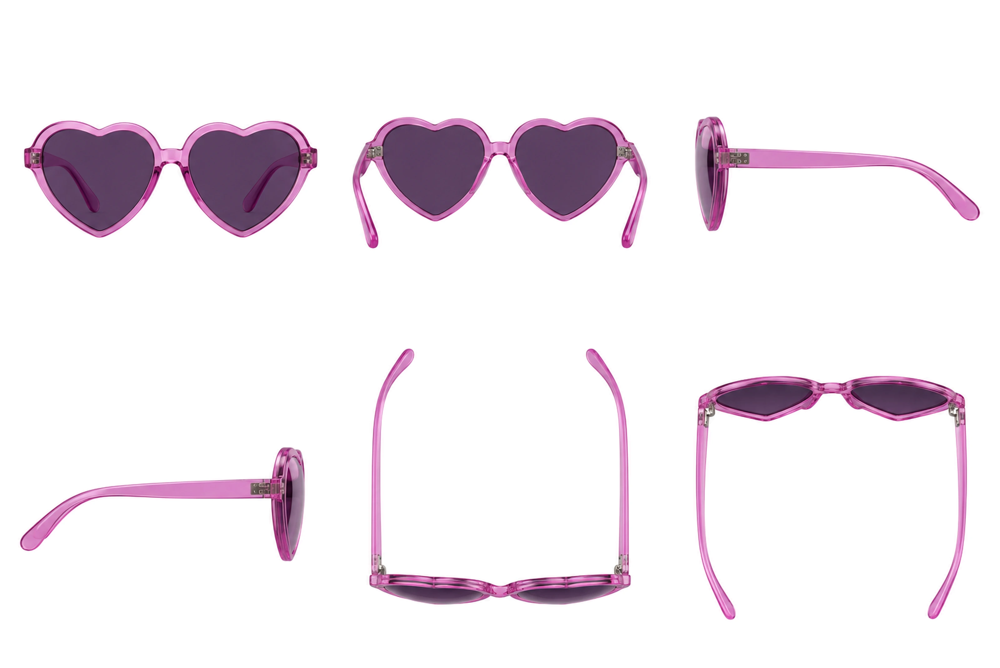
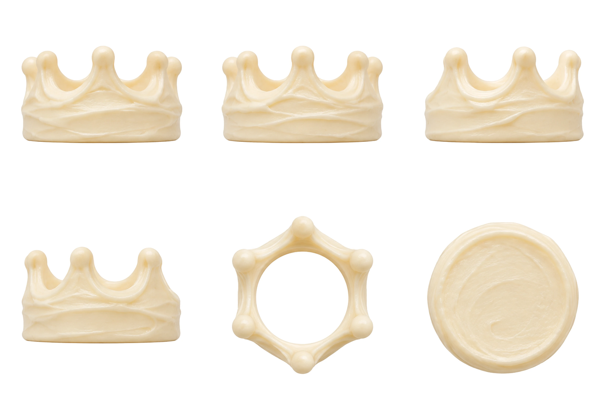
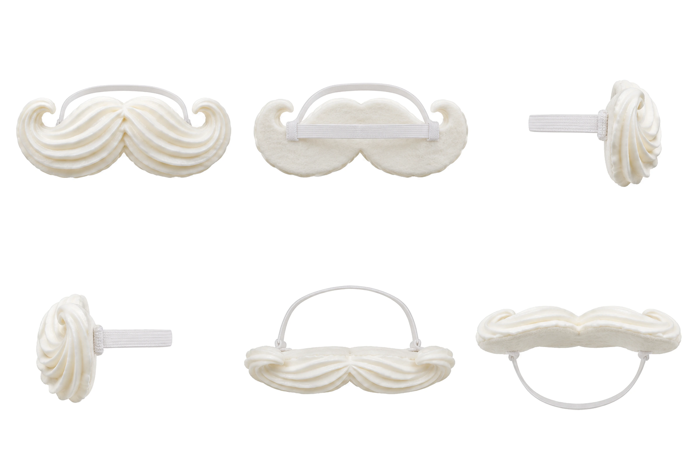

带货种草
奥利奥
正在连接在线视频…
视频简介
蓝色饼干小包出现在办公楼，棕衣女主掰开饼干试吃，奶油卷动把三人带进甜点隧道。他们乘车穿过彩虹轨和奶油云海，再沿滑道来到云上城堡。结尾三人回到玻璃窗前，产品蓝色画面收尾。
在快手观看原视频 ↗制作资产
角色资产

棕衣女主
办公室试吃者，带另外两人一起进入奶油世界。 栗色披发、棕色露肩上衣、深色短裤和颈带。幻想段戴奶油冠。 成片未完整展示的方位按可见造型补全。
绿衣女同事
在工位边围观试吃，随后一路随行。 深色短波波头、浅绿上衣、深格裙；终段戴心形墨镜。 成片未完整展示的方位按可见造型补全。

绿灰衣男同事
在办公室后排起身靠近，与两位同事共游甜点世界。 绿灰短袖衫、宽松浅色裤，终段加入奶油胡须。 成片未完整展示的方位按可见造型补全。
松鼠向导
奶油游乐园内出现的拟真松鼠吉祥物。 暖棕毛、浅腹、卷起的粗尾。主要拍摄探头目送轨道车。 成片未完整展示的方位按可见造型补全。
场景资产

写字楼开放办公区
写字楼开放办公区的场景视觉设定，用于空间布局、光影与镜头背景。

奶油甜点环形隧道
奶油甜点环形隧道的场景视觉设定，用于空间布局、光影与镜头背景。

彩虹滑轨游乐园
彩虹滑轨游乐园的场景视觉设定，用于空间布局、光影与镜头背景。
奶油云海城堡
奶油云海城堡的场景视觉设定，用于空间布局、光影与镜头背景。
道具资产

蓝色饼干小包
深蓝方形塑封袋，包边条纹及黑色饼干图形。 开场悬浮，后被女主撕开，成图移除包装文字。 成片未完整展示的方位按可见造型补全。

可可夹心饼干
两片深可可圆饼夹白奶油，表面为无字几何纹。 使用分离饼干和拉起奶油的动作过渡到幻想段。 成片未完整展示的方位按可见造型补全。
彩虹轨道甜点车
圆杯状棕色座舱，浅色坐垫和连接块。 三人乘坐时沿彩轨回转。 成片未完整展示的方位按可见造型补全。

心形墨镜
紫粉色框、深紫心形镜片。 幻想段由短发女同事佩戴。 成片未完整展示的方位按可见造型补全。

奶油冠饰
象牙白挤花形成的浅冠，峰尖圆钝。 奶油云海间戴到女主头上。 成片未完整展示的方位按可见造型补全。

奶油胡须饰件
一对柔白奶油曲线组成对称胡须。 同事互相看对方时形成视觉笑点。 成片未完整展示的方位按可见造型补全。
剧本与分镜
完整剧本与分镜脚本
带货种草 · 奥利奥 原片时长 33.13 秒 故事梗概 蓝色饼干小包出现在办公楼，棕衣女主掰开饼干试吃，奶油卷动把三人带进甜点隧道。他们乘车穿过彩虹轨和奶油云海，再沿滑道来到云上城堡。结尾三人回到玻璃窗前，产品蓝色画面收尾。 人物 棕衣女主完成试吃；绿衣女同事和男同事与她同行；棕色松鼠在轨道园作为短暂引导。 场景 写字楼开放办公区建立现实。奶油隧道、彩虹滑轨园和奶油城堡依次形成幻想段。 道具用途 小包和夹心饼干对应现实试吃，轨道车对应幻想动作；眼镜、奶油冠和胡须用于云海互动。 剧本与分镜 按原片抽帧重建的复拍制作稿。画面未能确认的对白、音效与镜头节奏按下表执行。 | 镜号 | 画面内容 | 镜头视角 | 使用资产 | 动作描述 | 台词/旁白 | 音效 | 单镜头时长 | | 01 | 蓝色小包掠过玻璃外墙后到女主手边 | 外墙仰拍切工位近景 | 蓝色饼干小包、棕衣女主、办公室 | 女主朝手边看，转动并撕开包装 | — | 轻啵、包装响 | 3.50秒 | | 02 | 女主掰开可可夹心饼干 | 面前双手特写 | 可可夹心饼干、棕衣女主 | 两手分开饼干，露出中央奶油 | — | 饼干轻脆声 | 2.50秒 | | 03 | 两位同事靠近，女主尝一口 | 工位三人中景 | 三位同事、饼干、小包、办公室 | 女主闭眼试吃，两位同事凑过来看 | — | 咬嚼、节奏抬升 | 3.00秒 | | 04 | 办公室被奶油卷入环形隧道 | 办公室远景接穿越跟拍 | 三位同事、奶油甜点环形隧道 | 三人向镜头跑，跨过环形糖果层 | — | 卷动、脚步 | 5.80秒 | | 05 | 乘甜点车经过摩天轮和松鼠 | 轨道前后跟拍 | 彩虹滑轨游乐园、彩虹轨道甜点车、松鼠向导、三位同事 | 甜点车顺彩轨弯下去，松鼠在岸边探头 | — | 轨道滚动、笑声 | 5.00秒 | | 06 | 三人落进奶油云朵 | 坡顶广角转三人近景 | 奶油云海城堡、奶油冠饰、奶油胡须、心形墨镜 | 三人互看配件变化，短发女同事推一下墨镜 | — | 软落地、轻笑 | 5.90秒 | | 07 | 三人从云海滑道滑下后并肩站起 | 大全景接正面广角 | 奶油云海城堡、三位同事 | 顺滑坡下落，构图将城堡留在身后 | — | 滑行声、音乐升高 | 5.40秒 | | 08 | 回到写字楼玻璃窗边 | 人物背面宽景 | 三位同事、办公区、蓝色饼干小包 | 三人望向蓝色产品画面，静止收尾 | — | 品牌段终止音 | 2.03秒 | 时长合计 33.13 秒